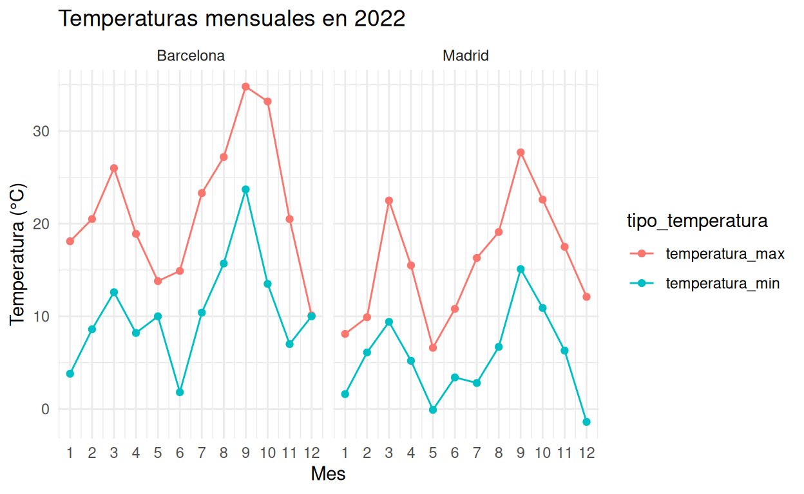

Introducción
En este tutorial, aprenderás a usar las funciones
pivot_longer() y pivot_wider() del paquete
tidyr para transformar datos climáticos. Estas funciones
son esenciales para preparar los datos antes de crear visualizaciones o
realizar análisis estadísticos.
Conceptos básicos de pivoteo
¿Qué es el pivoteo de datos?
El pivoteo de datos es una técnica que nos permite transformar la estructura de nuestros datos entre formatos “ancho” y “largo”:
- Formato ancho: Cada variable tiene su propia columna
- Formato largo: Las variables están contenidas en pares de columnas: una columna para el nombre de la variable y otra para el valor
¿Cuándo usar cada formato?
- Formato ancho: Útil para visualización e interpretación humana
- Formato largo: Mejor para análisis estadístico y visualización con ggplot2
Ejercicio 1: De ancho a largo con pivot_longer()
Observa los siguientes datos climáticos:
# Datos climáticos de Madrid y Barcelona en 2022
head(clima_ejercicio1)Queremos transformar las columnas de temperatura máxima, temperatura mínima y precipitación a un formato largo con columnas para el “tipo_medida” y “valor”.
# Completa el código para pivotar el dataframe clima_ejercicio1# Pista 1: Debes usar pivot_longer() y especificar las columnas a pivotar
clima_ejercicio1 %>%
pivot_longer(
cols = c(..., ..., ...),
names_to = "...",
values_to = "..."
)# Pista 2: Las columnas a pivotar son temperatura_max, temperatura_min y precipitacion
clima_ejercicio1 %>%
pivot_longer(
cols = c(temperatura_max, temperatura_min, precipitacion),
names_to = "...",
values_to = "..."
)# Solución
clima_ejercicio1 %>%
pivot_longer(
cols = c(temperatura_max, temperatura_min, precipitacion),
names_to = "tipo_medida",
values_to = "valor"
)Interpretación
En este ejercicio, hemos transformado el dataframe de un formato ancho (cada variable tiene su propia columna) a un formato largo (una columna para el tipo de medida y otra para su valor). Este formato es ideal para crear gráficos con ggplot2.
Ejercicio 2: De largo a ancho con pivot_wider()
Ahora trabajaremos con un dataset que contiene temperaturas medias y precipitaciones totales por ciudad y mes en 2021:
head(clima_ejercicio2)Queremos crear un formato ancho donde cada combinación de ciudad y tipo de medida sea una columna.
# Completa el código para convertir a formato ancho
clima_ejercicio2 %>%
# Primero, convierte a formato largo
pivot_longer(
cols = c(temp_media, precip_total),
names_to = "tipo_medida",
values_to = "valor"
) %>%
# Luego, convierte a formato ancho con columnas para cada ciudad y tipo de medida# Pista: Debes usar pivot_wider() con names_from y values_from
clima_ejercicio2 %>%
pivot_longer(
cols = c(temp_media, precip_total),
names_to = "tipo_medida",
values_to = "valor"
) %>%
pivot_wider(
names_from = c(..., ...),
values_from = ...
)# Solución
clima_ejercicio2 %>%
pivot_longer(
cols = c(temp_media, precip_total),
names_to = "tipo_medida",
values_to = "valor"
) %>%
pivot_wider(
names_from = c(ciudad, tipo_medida),
values_from = valor
)Interpretación
En este ejercicio, primero convertimos los datos a formato largo y
luego utilizamos pivot_wider() para crear columnas para
cada combinación de ciudad y tipo de medida. Este formato puede ser útil
para presentar datos en tablas o para ciertos tipos de análisis.
Ejercicio 3: Separando nombres de columnas con pivot_longer()
Observa los siguientes datos trimestrales:
head(clima_ejercicio3)Queremos crear un formato largo donde separemos las medidas en un formato más estructurado.
# Transforma los datos a formato largo con pivot_longer()
# Usa names_to para crear múltiples columnas# Pista: Puedes extraer prefijos de los nombres de columna
clima_ejercicio3 %>%
pivot_longer(
cols = c(temperatura_max, precipitacion, humedad),
names_to = "medida",
values_to = "valor"
)# Solución
clima_ejercicio3 %>%
pivot_longer(
cols = c(temperatura_max, precipitacion, humedad),
names_to = "medida",
values_to = "valor"
) %>%
# Opcional: Podemos también separar "temperatura_max" en dos partes
mutate(
categoria = case_when(
medida == "temperatura_max" ~ "temperatura",
TRUE ~ medida
),
tipo = case_when(
medida == "temperatura_max" ~ "máxima",
TRUE ~ NA_character_
)
)Ejercicio 4: Usando pivot_wider() con datos climáticos
Este conjunto de datos ya está en formato largo:
head(clima_ejercicio4)Queremos convertirlo a formato ancho con columnas para temperatura máxima y mínima.
# Convierte los datos de formato largo a ancho# Pista: Usa pivot_wider() con names_from y values_from
clima_ejercicio4 %>%
pivot_wider(
names_from = ...,
values_from = ...
)# Solución
clima_ejercicio4 %>%
pivot_wider(
names_from = tipo_temperatura,
values_from = valor
)Aplicación práctica
El pivoteo de datos es esencial para crear visualizaciones efectivas. Por ejemplo:
# Ejemplo de visualización con datos pivotados
clima_ejercicio1 %>%
pivot_longer(
cols = c(temperatura_max, temperatura_min),
names_to = "tipo_temperatura",
values_to = "temperatura"
) %>%
ggplot(aes(x = mes, y = temperatura, color = tipo_temperatura, group = tipo_temperatura)) +
geom_line() +
geom_point() +
facet_wrap(~ciudad) +
labs(title = "Temperaturas mensuales en 2022",
x = "Mes",
y = "Temperatura (°C)") +
scale_x_continuous(breaks = 1:12) +
theme_minimal()
Proyecto final: Análisis climático completo
Ahora trabajaremos con el conjunto de datos completo para crear un análisis integral.
Paso 1: Preparar los datos para análisis
# Calcula las temperaturas medias mensuales por ciudad y año
clima_final %>%
# Calcula la media entre temperatura máxima y mínima# Pista: Calcula la temperatura media y luego pivot_wider para visualizar
clima_final %>%
mutate(temp_media = (temperatura_max + temperatura_min) / 2) %>%
group_by(ciudad, año, mes) %>%
summarize(
temp_media = mean(temp_media),
precip_total = sum(precipitacion),
.groups = "drop"
)Paso 2: Crear visualizaciones
# Crea una visualización de las temperaturas medias# Solución para la visualización
resultado_clima %>%
ggplot(aes(x = mes, y = temp_media, color = ciudad)) +
geom_line() +
geom_point() +
facet_wrap(~año) +
labs(title = "Temperatura media mensual por ciudad",
x = "Mes",
y = "Temperatura media (°C)") +
scale_x_continuous(breaks = 1:12) +
theme_minimal()Análisis de correlación entre temperatura y precipitación
# Pivota los datos para analizar la correlación entre temperatura y precipitación# Solución
resultado_clima %>%
ggplot(aes(x = temp_media, y = precip_total, color = ciudad)) +
geom_point(alpha = 0.7) +
geom_smooth(method = "lm", se = FALSE) +
facet_wrap(~año) +
labs(title = "Relación entre temperatura media y precipitación",
x = "Temperatura media (°C)",
y = "Precipitación total (mm)") +
theme_minimal()Conclusión
¡Felicitaciones! Has completado el tutorial sobre pivoteo de datos climáticos. Ahora eres capaz de:
- Transformar datos de formato ancho a largo con
pivot_longer() - Transformar datos de formato largo a ancho con
pivot_wider() - Combinar operaciones de pivoteo con otras funciones de
dplyr - Preparar datos para visualizaciones efectivas
Estos conceptos te permitirán manipular datos de manera eficiente para cualquier tipo de análisis estadístico o visualización.